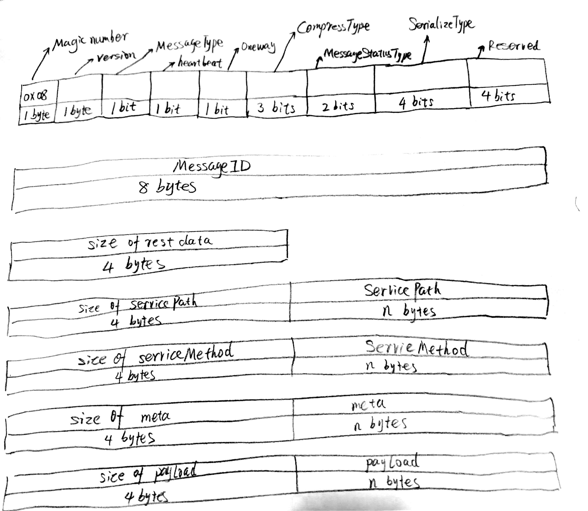

Protocol
requests and responses of rpcx use the same message format.
One message contains:
- Header: 4 bytes
- Message ID: 8 bytes
- total size: 4 bytes, doesn't contain size of header and itself, uint32
- size of servicePath: 4 bytes, uint32
- servicePath: UTF-8 string
- size of serviceMethod: 4 bytes, uint32
- serviceMethod: UTF-8 string
- size of metadata: 4 bytes, uint32
- metadata: format:
sizekey1 stringsizevalue1 string, can contains multipl e=key, value - size of playload: 4 bytes, uint32
- playload: slice of byte
#4 + #6 + #8 + #10 must be equal to #3.
servicePath、serviceMethod、key and value in metadata must be UTF-8 string.
rpcx uses size of an element + element format to define one element. It is like TLVbut rpcx doesn't use Type because Type of those elements are UTF-8 string.
Use BigEndian for size (integer type, int64, uint32, etc.)

1、The first byte must be 0x08. It is a magic number.
2、The second byte is version. Current version is 0.
3、MessageType can be: 0: Request 1: Response
4、Heartbeat: bool. This message is heartbeat message or not
5、Oneway: bool. Need return response or not.
6、CompressType: 0: don't compress 1: Gzip
7、MessageStatusType: indicates response is an error or a normal response 0: Normal 1: Error
8、SerializeType 0: use raw bytes 1: JSON 2: Protobuf 3: MessagePack
If one service fails to handle requests, it can return an error. It sets MessageStatusType of response is 1 (ERROR) and sets the error message in metadata of the response. The key for the error is rpcx_error, and the value is error message.